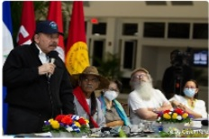

Daniel Ortega inventó un "tío abuelo obispo" para atacar con virulencia a la iglesia
Su hermano Humberto Ortega lo desmiente: Marco Antonio Ortega no era un obispo "cómplice", sino el abuelo que abogó por su padre Daniel Ortega en 1934
EMERGENCIA CORONAVIRUS
Covid-19 en ascenso: Minsa admite más de 200 contagios en la última semana
POLÍTICA
Victoria Cárdenas y Berta Valle exigen ver a Juan Sebastián Chamorro y Félix Maradiaga
Régimen generaliza 90 días de "investigación" para opositores que acusa de "traición a la patria"; ambos precandidatos continúan incomunicados
POLÍTICA
OEA condena con 26 votos el arresto de opositores y exige su liberación inmediata
El Consejo Permanente aprueba resolución por amplia mayoría; únicamente cinco países miembros se abstuvieron y tres votaron en contra
POLÍTICA
La Fórmula de Daniel Ortega para anular a la oposición de la competencia electoral
Fiscalía y Policía usan "Ley de Soberanía" para detener a opositores, y los encarcela por noventa días con el pretexto de "investigarlos"
NACIÓN
Policía secuestra a opositores Dora M. Téllez, Ana M. Vijil, Suyen Barahona y Hugo Torres
POLÍTICA
"El respeto a los derechos humanos está por encima de cualquier principio de no injerencia"
Expresidente costarricence Rafael Calderón destaca histórica resolución de cancilleres de la OEA que condenó a la dictadura de Somoza en junio de 1979